Navigation Sharing
Navigation Sharing adds the following features to basic Routes & Tracks:
-
Send to GPS - to send a route or waypoints to a GPS-equipped chartplotter.
-
Send to Peer - to send a route or waypoints to another instance of OpenCPN on the same network.
-
Import GPX file - to restore old routes or tracks, or to receive from another device or boat.
-
Export GPX file - for historical purposes, or to transfer to another device or boat.
Sections in the User Manual relevant to navigation sharing include:
In addition, there is detailed information in these User Manual sections:
For convenient access, navigation sharing menus are included with various menus:
-
Route Manager’s "Tab" Menus. For example ./../route_manager/routes_tab.html.
-
"Right-click" interface such as Modify a Route when hovering over a Route, Track, Mark or Layer.
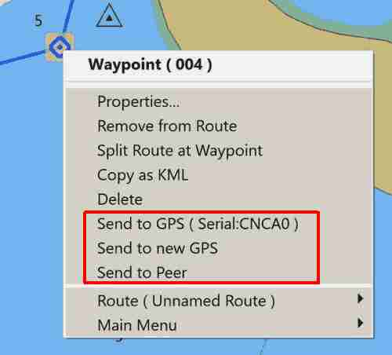
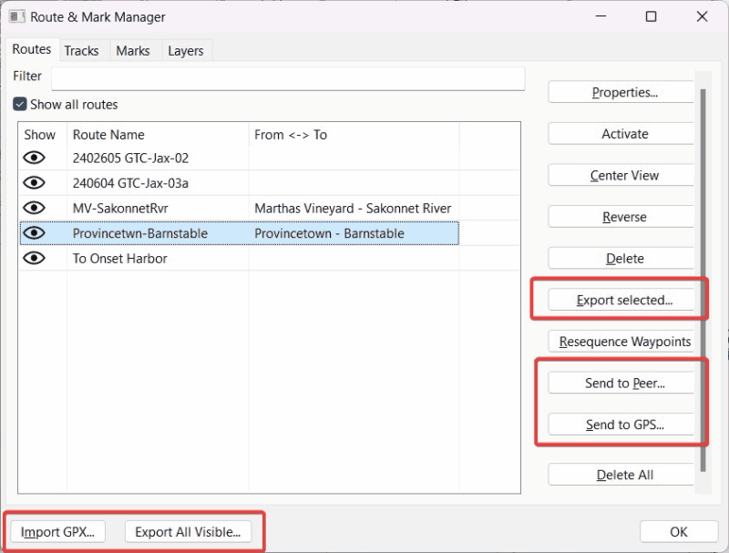
Managing Routes and Tracks
Keeping a lot of active routes in OpenCPN makes for a cluttered chart display. It also slows the program and makes it use more system resources. Imagine a word processor where every document you ever created was displayed unless you made it invisible. The Route & Mark Manager buttons Export selected and Import GPX work like the "Save" and "Load" options in most programs. Just as you wouldn’t save all your word processing documents in a single giant file, it’s not efficient to export all your navigation objects into a single file.
It is more efficient to export each route or track to a separate file. Click on the object, click on the "Export selected" button, name the file, and navigate to the folder in which you want it saved. If you save each route and track in its own file you can import them individually. There is more discussion of a strategy for creating routes at ./../create_routes.html.
Another strategy for managing routes is to export them, then load them as temporary or persistent layers that can be individually hidden or made visible. Read more at Route & Mark Manager > Layers Tab.
The Export All Visible button is useful for making a quick backup copy of all your navigation objects but the resulting file is cumbersome to work with.
Export & Import GPX Files
In Route & Mark Manager, you can export and import routes, tracks, marks, and layers using the GPX file format. This lets you save your routes and marks to external files so you may have more than the active ones - for example, to do route planning or archive existing data.
-
GPX format is supported by a wide variety of programs.
-
You can have as many external files as you wish, there are no limits on the number of external files.
-
Use this for passage planning by saving multiple possible routes for a passage.
-
Export routes and tracks for historical-log purposes.
-
Prepare layers as an aid to navigation enroute.
-
Note that marks that are already in an included Layer, even a non-visible Layer, will not be imported.
-
Technical Information: Navigation Data Backup for Routes, Marks, Navobjects, GPX and GUID
Sending Routes and Marks to a GPS-equipped Chartplotter
The feature Send to GPS allows you to send a route or marks to a GPS-equipped chartplotter. The feature appears in the right-click menus for marks and routes and in the Route Manager.
Note: this feature is not linked to OpenCPN’s Connections. The upload port does not even need to appear in the Datastream connections list. For this reason, users must define a separate upload port which is remembered by OpenCPN. The port can be changed by clicking the button in the Route Manager.
NMEA provides no handshake protocol for Route and Marks uploading. OpenCPN simply sends the Route/Mark information out on the port, without having any way to know if there is actually a device connected to the port.
The Garmin protocol does provide handshaking, so OpenCPN can be sure that the information is uploaded correctly. The Garmin protocol will fail if the device is not a Garmin.
In the case of standard NMEA, the indication "Route successfully uploaded" is not very meaningful. It just means that a port was found, and writing to that port succeeded.
In the case of simple "hockey puck" GPS receivers with no chart display, they will probably ignore route and mark uploads, since there is nothing for them to do with this information anyway.
The key to remember is that Route and Mark upload process is completely independent of normal running Datastream operations. They are two separate sub-systems of OpenCPN.
It does no harm to assign the Datastream GPS port as an output and input device together. Some users might reasonably expect that this would be required for Route and Mark uploads. Most simple GPS receivers would ignore input sentences other than Route and Mark uploads anyway.
Monitoring Route/Mark Uploads
First, enable the NMEA Debug Window (Options > Connections > check Show NMEA Debug Window), then be sure to CLOSE the Connections Menu leaving the NMEA Debug Window up, or nothing will happen).
In the Chart window, hover over the intended temporary goto Mark and right-click, then select, for example, Send to GPS (Serial Com 14). By quickly looking at the NMEA Debug window you’ll see the sentences sent out. See screenshot below.
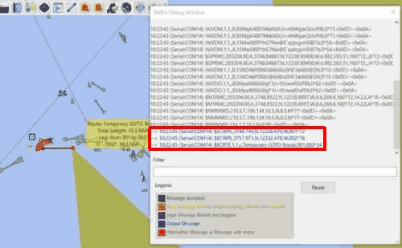
-
Note the active route above was a 4-point route, but the active leg and active wp was the 3rd point for the above screen.
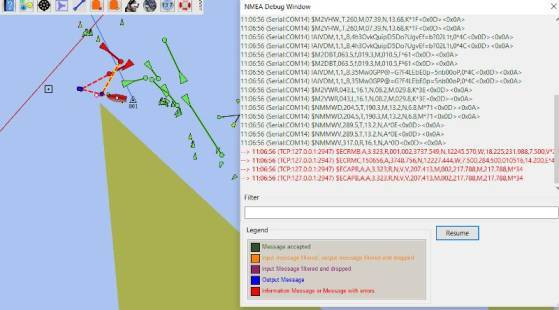
-
Note the screenshot above is for the same Active Route, but the active waypoint is the 2nd point.
Note: There are many techniques for testing and simulation. Using NavMonPC to read a previously recorded file is one very good way. Another is to use OpenCPN’s Voyage Data Recorder plugin to read the NMEA file, which is in some respects simpler for a new user.
Send to GPS
Send the Route to your GPS-equipped chartplotter. Pressing the button activates a dialog in which an output port is selected. This choice also appears in the right-click menu for Routes and Marks.
For Garmin Users. Older Garmin units may not accept route uploads via standard NMEA 0183 but needs to be set in GRMN mode. To use that in OpenCPN enable the Tools→Options→Connections→Use Garmin (GRMN) host mode for uploads. When enabled the port does not have to be listed in Connections as it is an independent feature and if already listed in Connections these settings are ignored during this GRMN transfer.
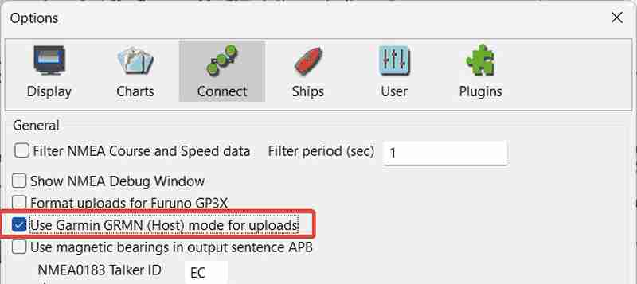
Most modern Garmin chartplotters now accept the NMEA 0183 WPL (Waypoint List) and RTE (Route summary) sentences using an output port listed in Connections as usual.
Send to Peer
Send a route, track or mark to another OpenCPN instance.
When one or more OpenCPN instances are connected to the same local
network, i.e via the same Gateway, it’s possible to transfer a single
waypoint or an entire route to another OpenCPN instance. Also a
"portable" instance on the same PC is seen as a peer and then a network
connection is not needed.
The function Send to Peer is available on the right-click
menu when the cursor is over a route or a WP. Also in Route
and Mark Manager, one can select a route, track or mark and click the
button Send to Peer.
When Send to Peer is activated by a button or a menu item
a mDNS query is sent on the local network for other OpenCPN instances to
reply. Those who respond in time are listed in a dialog window and you
can choose your intended target for transfer. If the desired OpenCPN is
not found, you can try again by the Scan again button.
The target is called server and the one you are sending from is called
client.
If it’s the first time you connect to another OpenCPN the server will
display a Pin code you must enter on the client to continue. Subsequent
transfer to this server will not need a Pin code. When the transfer has
succeeded you will be messaged about that.
If you send a route to the server it’s possible get it activated once
received. Optionally, select the Activate After Transfer
option before start the transfer.
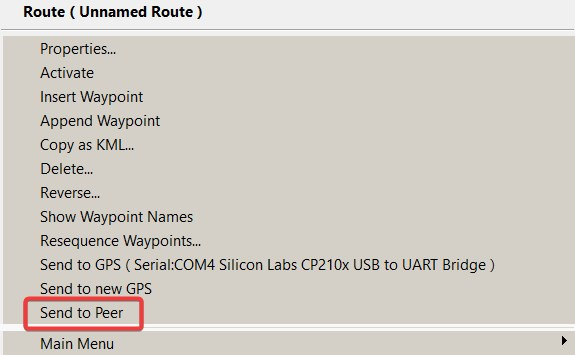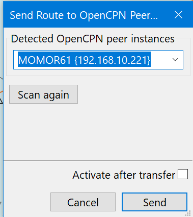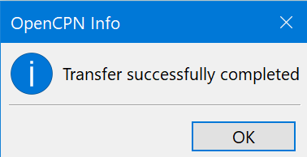
If it’s the first time to transfer to a server a Pin code is needed.
Manual handling is therefore necessary.
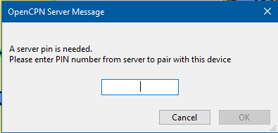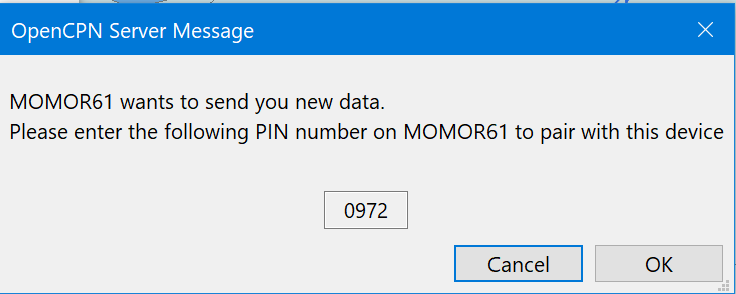
Garmin Device Transfer
Transferring routes or waypoints from OpenCPN to Garmin handheld devices
Over the years Garmin has produced a lot of different devices and changed the connection methods to PCs or notebooks. Before and around the year 2000 there was the proprietary Garmin round plug with 4 pins with a real serial port:
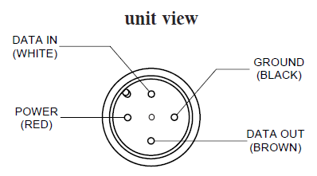
Later Garmin introduced the Universal Serial Bus (USB) with an USB-A connector on the PC/notebook side, and an USB-B Mini (starting around year 2000), an USB-B Micro (starting around year 2007) or an USB-C (starting 2023) connector on device side.
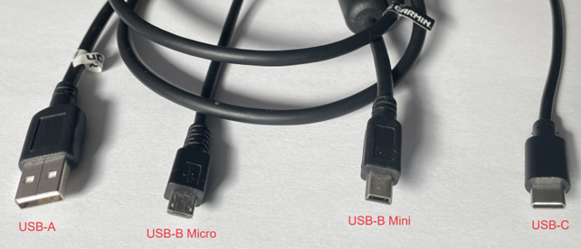
Depending on the connector different methods need to be applied to transfer routes and waypoints from OpenCPN to Garmin device.
Here a small overview of a selection of Garmin devices by connector:
-
Garmin power/data cable (4-pin round plug):
-
GPS12 (1999)
-
GPS72 (2002)
-
GPSMAP60 (2005) - has both 4-pin round plug and USB-B Mini
-
GPSMAP76 (2006)
-
-
USB-B Mini:
-
GPSMAP60 (2005) - has both 4-pin round plug and USB-B Mini
-
GPSMAP62 (2010)
-
GPSMAP64 (2016)
-
GPSMAP65 (2020)
-
GPSMAP78 (2010)
-
-
USB-B Micro:
-
GPSMAP66 (2018)
-
GPSMAP79 (2021)
-
GPSMAP86 (2019)
-
-
USB-C:
-
GPSMAP67 (2023)
-
most probably further new handheld devices will use USB-C
-
All the devices with the 4-pin round plug have a real serial interface and should use the transfer method described under 1. below.
All the devices with USB connectors have a universal serial bus interface and should use the transfer methond described under 2. below.
1. Transfer method for Garmin proprietary 4-pin round plug (real serial port):
(a) On your device in setup menu Interface change to GRMN/GRMN mode. The device should report "Waiting..…" (b) Connect the device. Two different methods exist for establishing the connection:
-
If a PC/notebook still has a real serial port, a RS232 interface with 9-pin D-Sub connector) the Garmin device can be connected directly to PC/notebook with Garmin’s PC Kit Interface Cable (with 9-pin ‘D‘ serial data connector).
II. If a PC/notebook has the more recent USB-A port, then a serial/USB converter cable has to be used, as shown exemplary in the picture below:
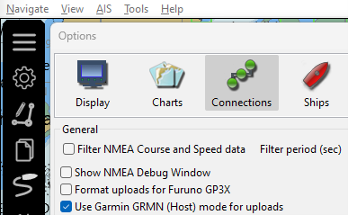
(d) On a route or mark select “Send to GPS…“ (or “Send to new GPS…“), select the COM port that your device is connected to and press „Send“.

(e) The Garmin device should report "Transfer complete" and OpenCPN shows that route or mark have been transmitted:
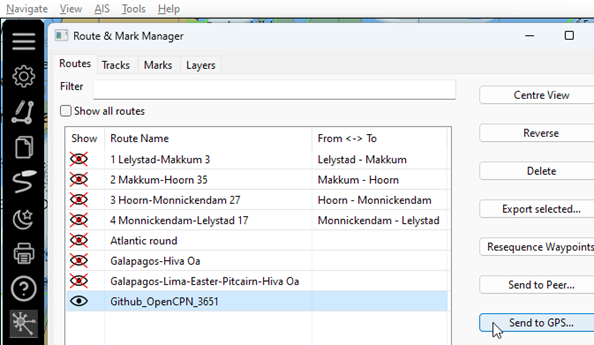
(f) Remarks:
-
It is not neccessary to set up an OpenCPN connection for this transfer. Also if there is an existing OpenCPN connection for the same port these settings are not used for the "Send to GPS" function. Such a connection is automatically disabled during this transfer. II. NMEA Debug window is not used for the "Send to GPS" transfer. III. In case the device does not use GRMN mode to receive a transfer but simply accepts NMEA0183 WPL and RTE, an OpenCPN output connection to the port in question has to be set-up. Set "Transmit only sentences" to filter "WPL" and "RTE" and disable "Use Garmin host mode for uploads". Then it looks like this using "Send to GPS":
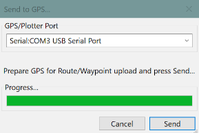
2. Transfer method for Garmin devices with USB port B or C:
(a) On your device in System setup menu Interface change to Garmin Spanner mode:
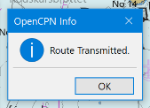
(b) Connect the device with USB cable to PC or notebook. On the Garmin device a notification comes up “USB cable detected. - Would you like to go to Mass Storage?“ Choose “Yes“:
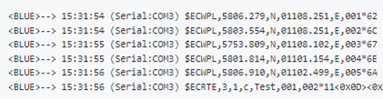
The device goes into “Mass Storage“ mode and cannot be operated while in this mode. On Windows PCs/notebooks the Garmin device should be available as a disk drive within a couple of seconds (max. 30 seconds). On a Raspberry Pi with bullseye mounting the Garmin device may take up to 90 seconds, so some patience is required. The Garmin device must be visible as drive in the operating system before the next step can be executed!
(c) The Garmin is now connected (mounted) as disk drive to the PC/notebook. In OpenCPN no specific setting is required in the Options/Connections menu, as all transfers take place using underlying operating system functionalities.
The next step is to open the route/wayoint manager. Mark the route or waypoint that you want to transfer and choose “Export selected“ – important: do not choose “Send to GPS…“.
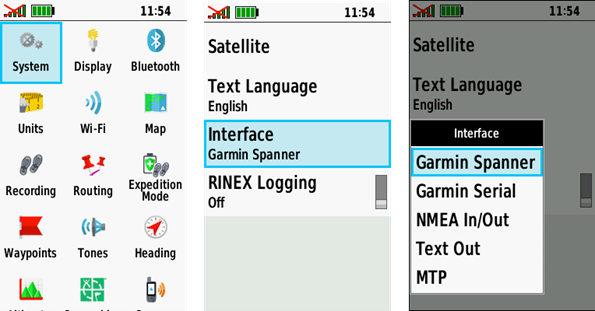
While the Garmin device is connected/mounted as disk drive the folder “Garmin\GPX“ on the device has to be chosen for this export/transfer:
Click on “Save“ and the item(s) will be stored on the device. After de-connecting the Garmin and booting it up again the route or waypoint can be found in the route or waypoint manager on the Garmin device:
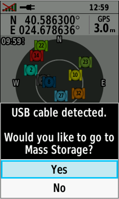
Transfer Routes to B&G
Please download this PDF file for information about transfer of routes to B&G
Also refer to this CF Thread https://www.cruisersforum.com/forums/f134/opencpn-routes-to-b-and-g-zeus3-mfd-237668.html#post3916256